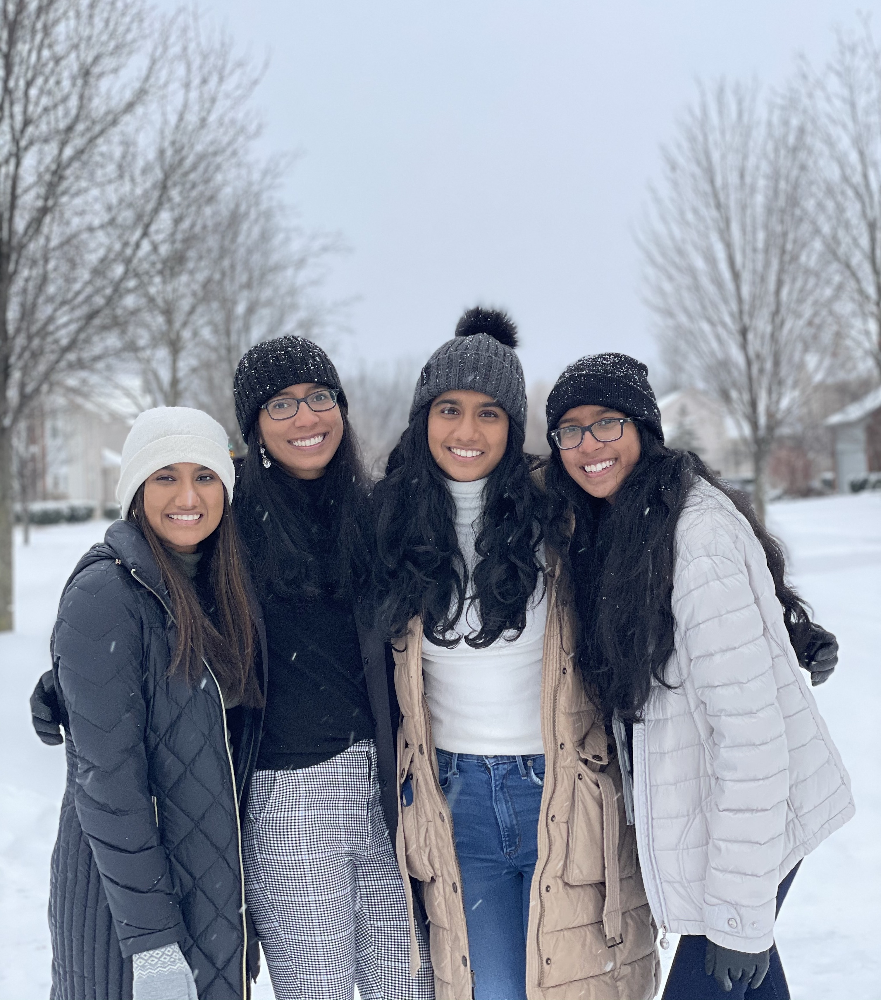
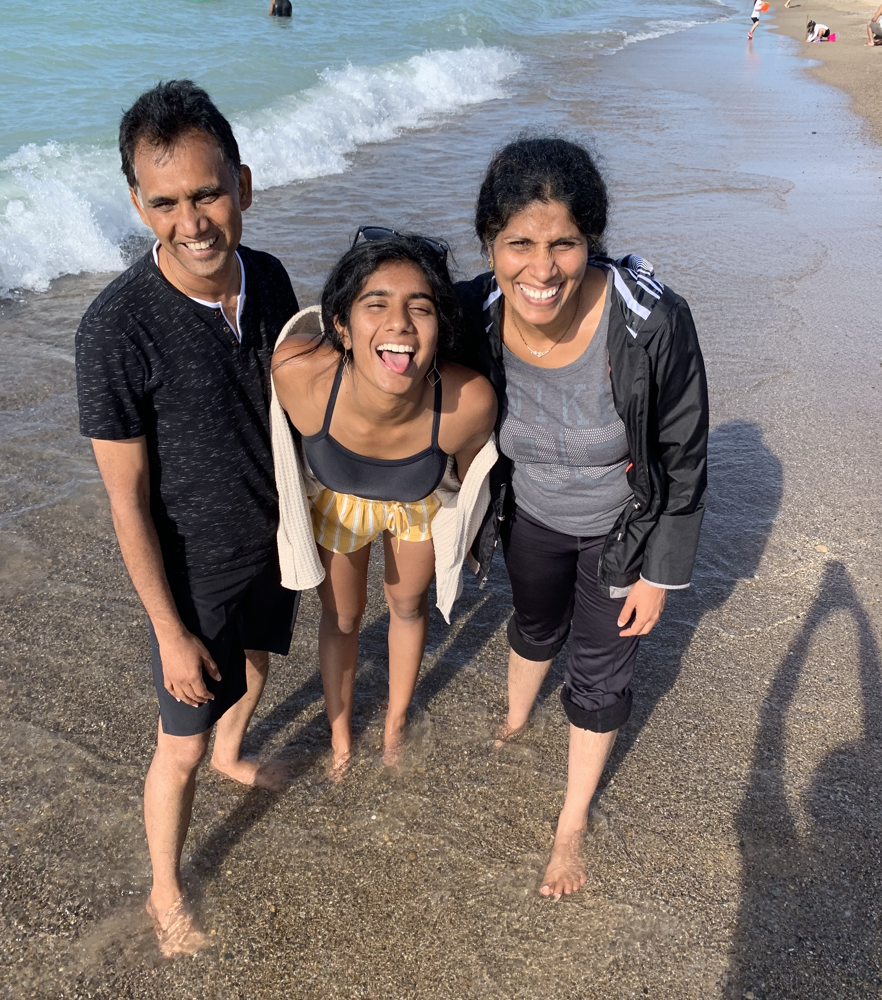
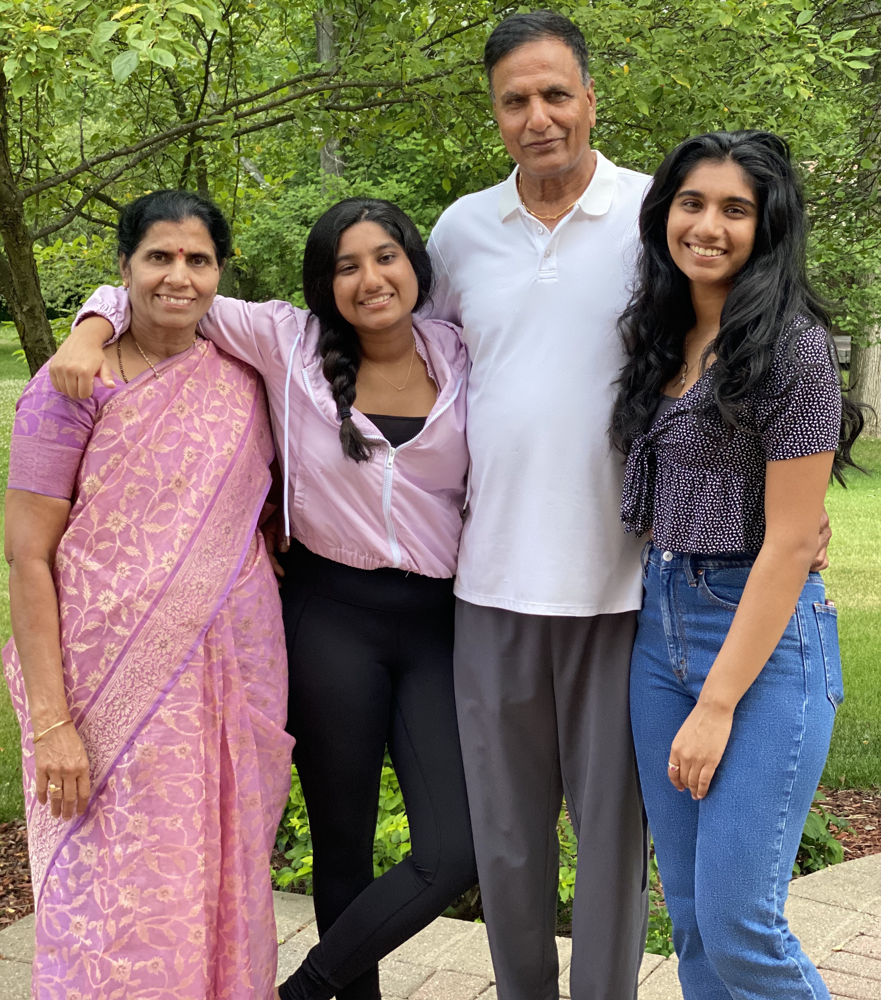
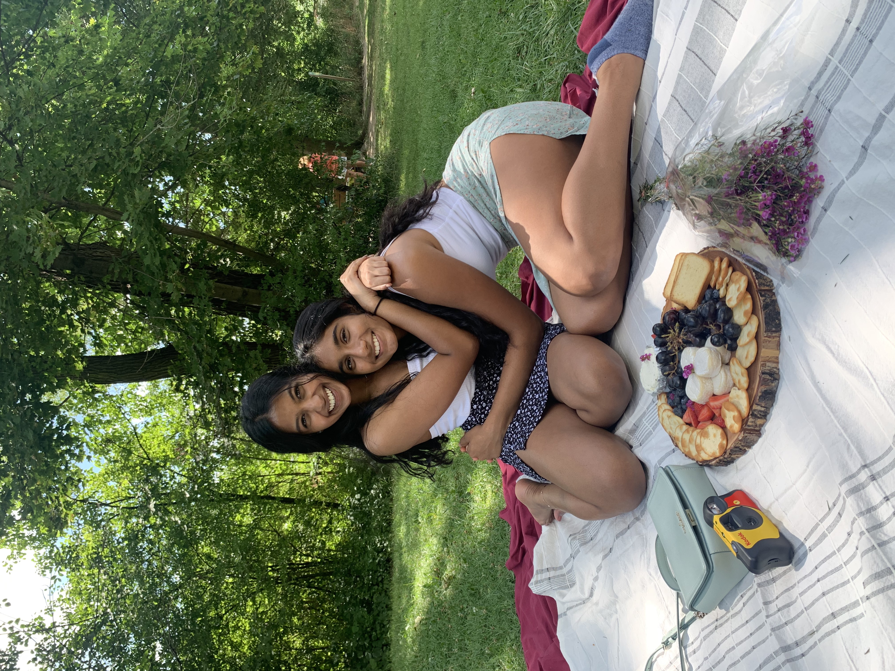
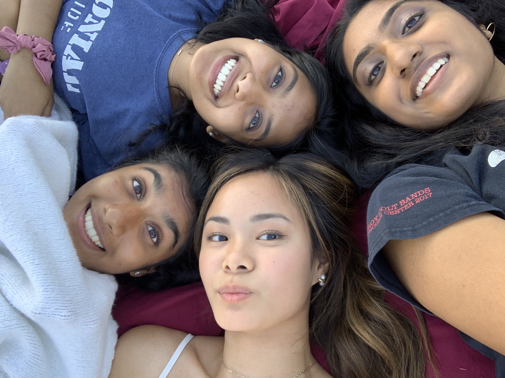
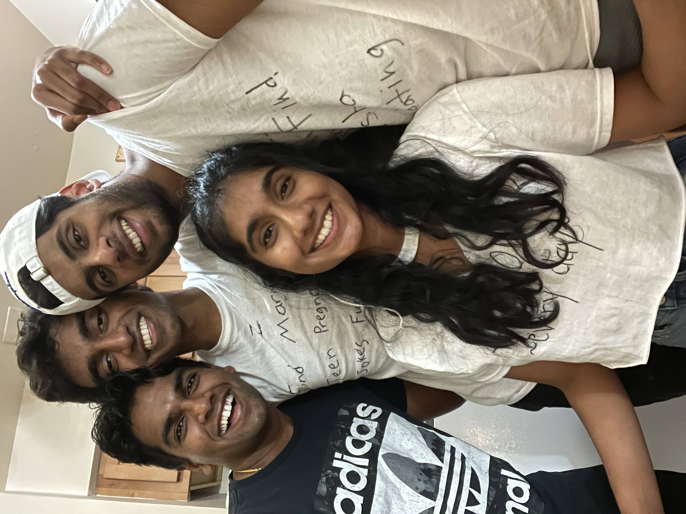
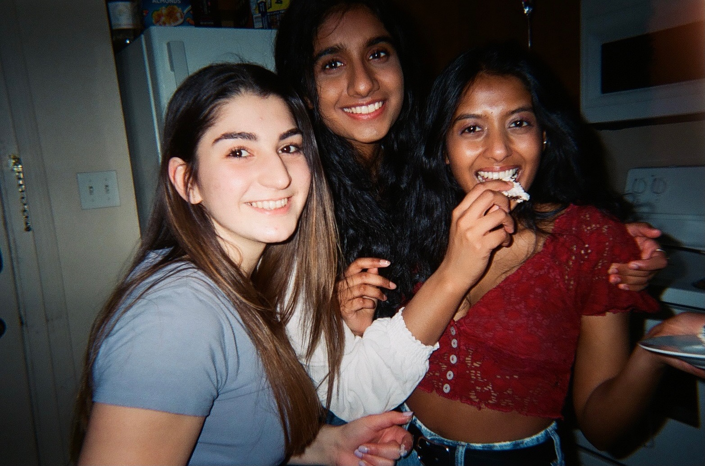
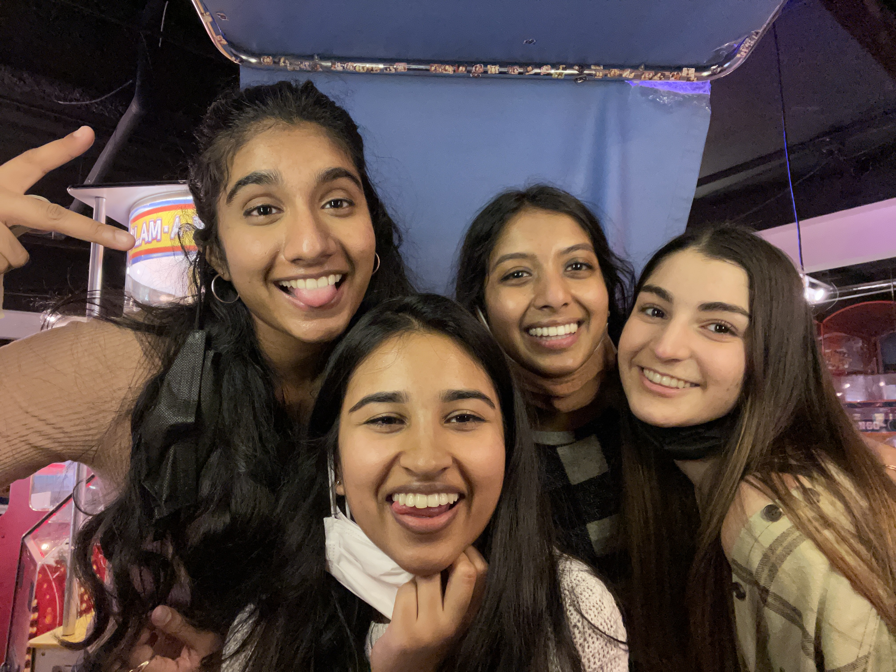
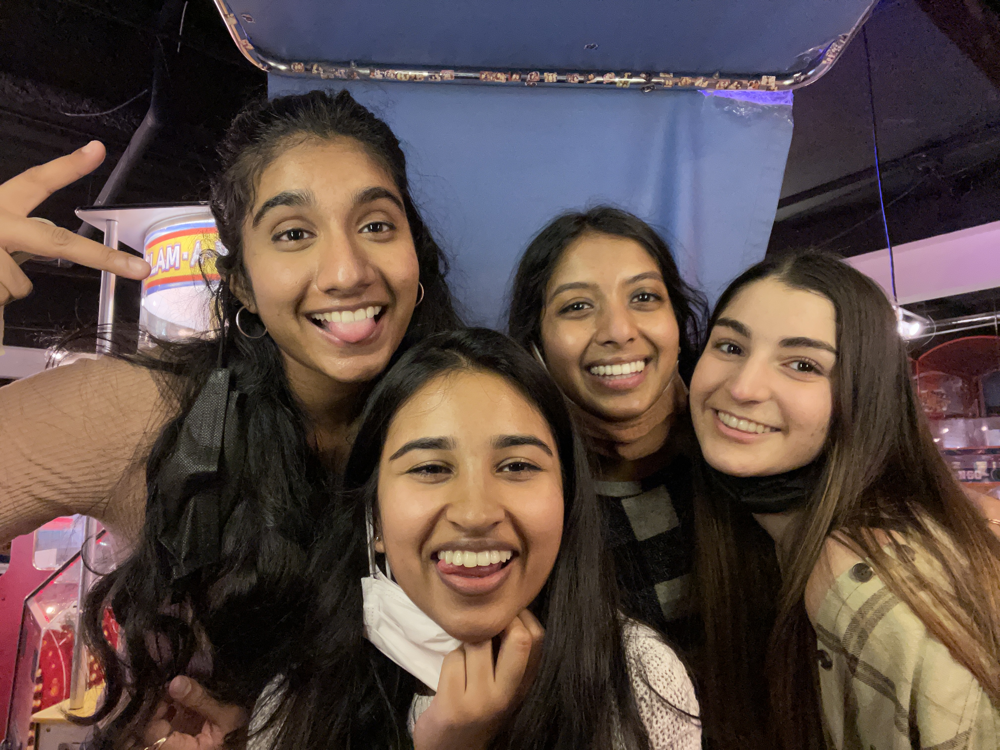
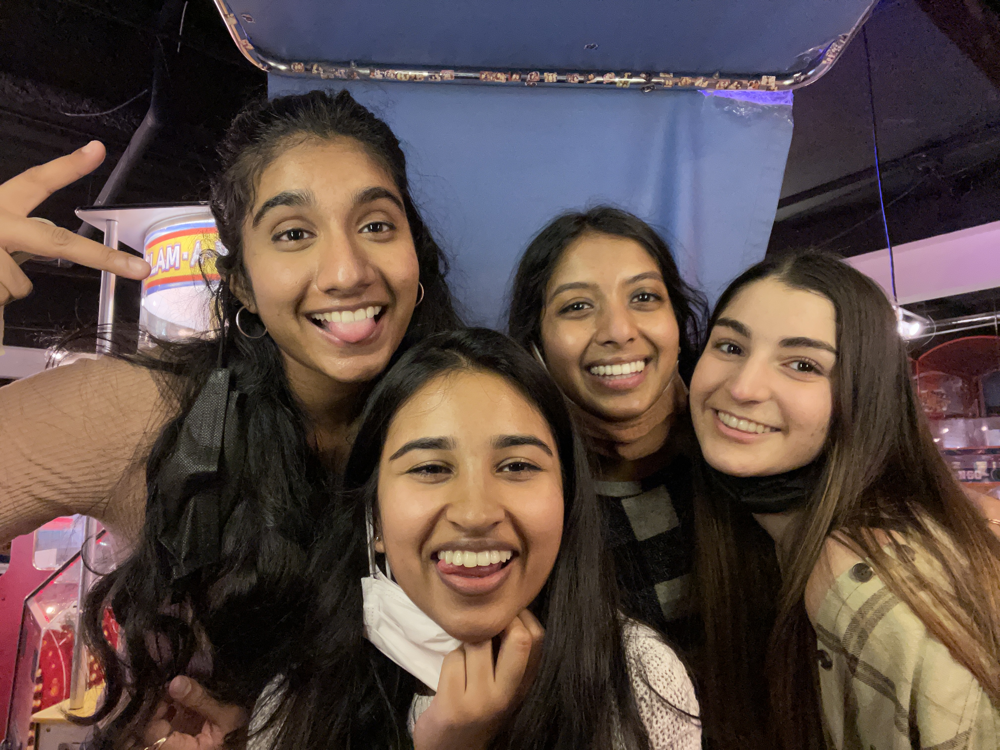

Family
I grew up in a big family of 10 people. My grandparents moved from India to live with us ever since I was born. My cousins have lived 3 houses down from me for as long as I can remember, which has led to me becoming a very family-oriented person. A lot of my guiding values and principles are rooted from my family.



Friends
My friends are people I value a lot in this world. I believe that my experiences with my friends have been pivotal to my growth as a person. Dear my friends, "Because of you, I laugh a little harder. Cry a little less. And smile a lot more."




 

